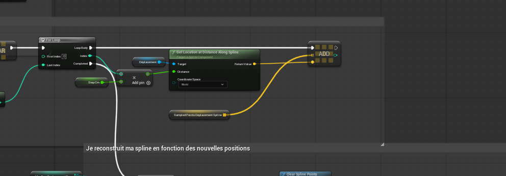
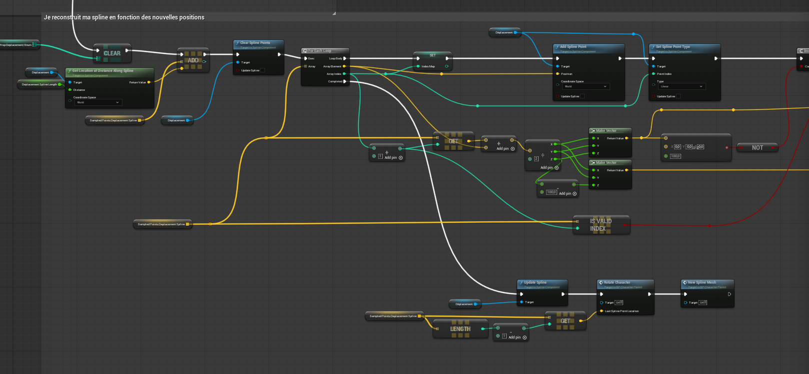
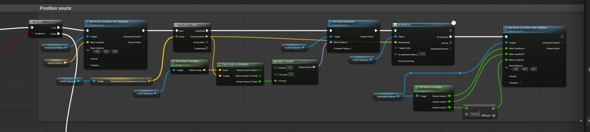
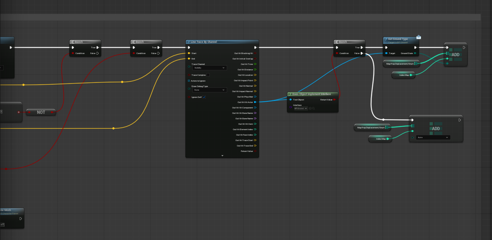
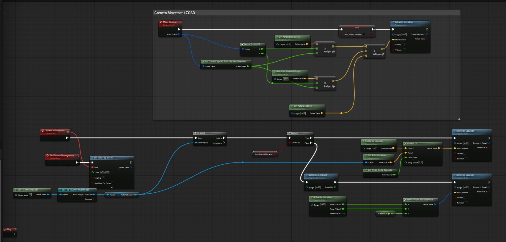
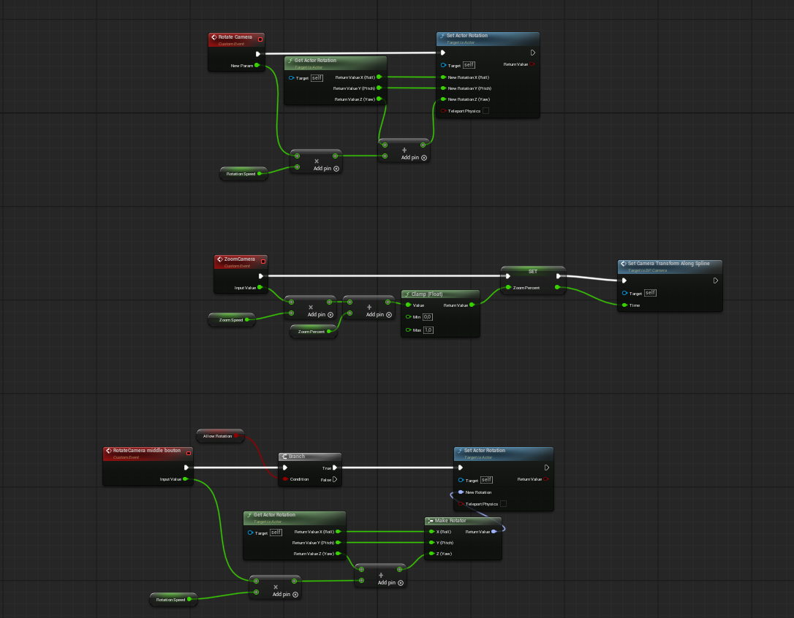
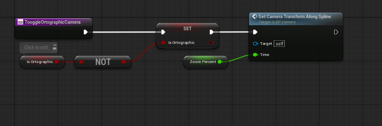
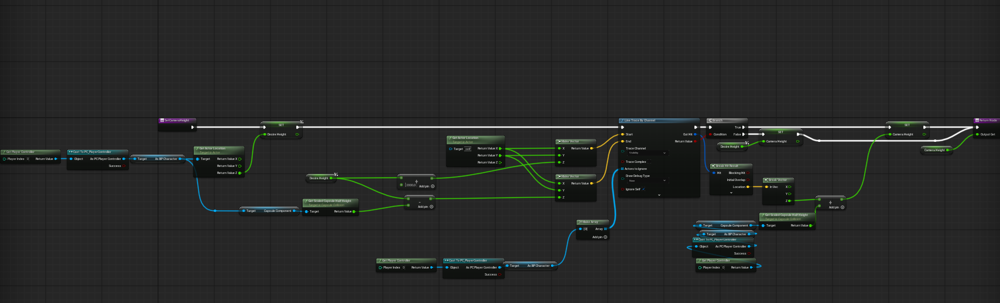
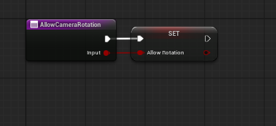
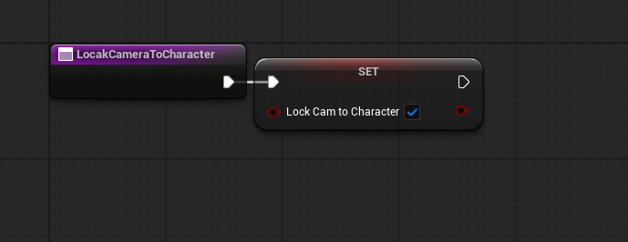

Character Blueprint
Destination au clic, calcul du chemin, Splines, points de passage et déplacement.
ÉTUDE TECHNIQUE / UNREAL ENGINE 5 / BLUEPRINTS
Calculer une trajectoire, la reconstruire avec des Splines, guider le personnage et contrôler une caméra indépendante.
Cette page documente l'implémentation actuelle du prototype. Elle s'appuie sur mes véritables captures Blueprint, sans détailler les anciennes versions.
02 / STRUCTURE
La navigation et le déplacement sont centralisés dans le Character Blueprint. Le fonctionnement de la caméra est organisé dans BP_Camera, avec ses propres composants et événements.
Destination au clic, calcul du chemin, Splines, points de passage et déplacement.
Déplacement libre, verrouillage, recentrage, rotation, hauteur, zoom et perspectives.

04 / TRAJECTOIRE
Les points issus de la NavMesh alimentent une première Spline. J'en récupère ensuite les positions à intervalle de 50 cm avec Get Location at Distance Along Spline, puis je reconstruis la trajectoire à partir des positions échantillonnées.
Des points trop espacés donnent un tracé anguleux, contraire à la courbure recherchée.
Un échantillonnage trop dense provoquait des ralentissements. L'intervalle de 50 cm est un compromis retenu sur ce prototype, sans prétendre qu'il soit optimal dans tous les cas.


Les Splines interpolent des courbes, mais ne garantissent pas à elles seules que chaque position interpolée reste navigable. Ce point reste une contrainte générale de l'approche.
05 / EXECUTION
Le système exploite le tableau des positions échantillonnées pour guider le personnage avec AI MoveTo. Des calculs d'orientation utilisent également Find Look at Rotation. Dans le prototype testé, le personnage suit correctement la courbe produite.

Sur cette capture, For Each Loop ne se synchronise pas automatiquement avec la fin d'un AI MoveTo latent. Le code visible ne suffit donc pas à établir l'ordre exact de validation de chaque point. Je présente le résultat observé, sans inventer une séquence asynchrone absente des captures.

06 / BP_CAMERA
Le contrôle ZQSD déplace BP_Camera indépendamment du personnage. Un état de verrouillage permet de suivre le Character, avec interpolation de position via VInterp To. Le recentrage réactive ce suivi.
Le système gère aussi la rotation, le zoom avec un paramètre normalisé, une transformation pilotée par des Splines, les modes orthographique et perspective, et une hauteur de caméra calculée à l'aide d'un Line Trace.






07 / EXPERIMENTATIONS
Le prototype comprend des interactions au clic, la collecte de ressources, leur affichage dans un inventaire et une fabrication simple à partir de ces ressources. Ces systèmes ont servi à expérimenter d'autres fondations de gameplay, sans constituer un RPG complet.

08 / RETOUR TECHNIQUE
Le déplacement et la caméra fonctionnent dans le périmètre testé. La difficulté principale a été de construire une courbe lisible avec un échantillonnage suffisamment fin tout en préservant les performances.
La logique de déplacement reste fortement centralisée dans le Character Blueprint. Avec mes connaissances actuelles, je privilégierais une séparation plus claire des responsabilités et des composants réutilisables. Ce constat relève de mon recul technique ; il ne faut pas présenter cette organisation initiale comme un choix architectural intentionnel.
Retrouver la présentation générale, les fonctionnalités et les limites du prototype.
Revenir à la présentation →